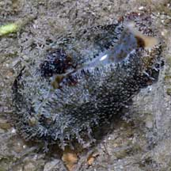
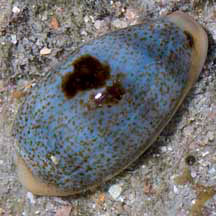
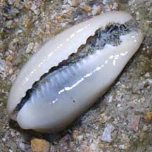
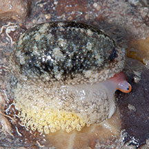

|
|
| shelled snails text index | photo index |
| Phylum Mollusca > Class Gastropoda > Family Cypraeidea |
| Wandering
cowrie Erronea errones Family Cypraeidae updated Jul 2020
Where seen? This little cowrie is commonly seen on our Northern shores usually under stones, but sometimes crawling about in the open. Sometimes also seen on our Southern shores among coral rubble. It was previously known as Cypraea errones. Features: 2-3cm. Shell cylindrical, generally pale blue with 3 broad pale brown bands and small brown speckles all over. Sometimes, but not always, with a big brown blotch in the middle. There may be one or two brown spots at the front tip of the shell, sometimes no spots. Underside white without coloured 'teeth'. The living animal has a dark mottled mantle. Sometimes confused with the Ovum cowrie (Cypraea ovum) which is similar but is pear-shaped, does not have spots at the front end of the shell and has 'teeth' that are tinged yellow or orange. Here's more on how to tell apart Wandering and Ovum cowries. When the shell is completely covered in its mantle, it is sometimes mistaken for a sea slug. Here's more on how to tell apart slugs and animals that look like slugs. |
|
 Sisters Island, Jan 11 |
 Shell cylindrical with one or two spots. Sisters Island, Jan 11 |
 Teeth' not coloured. Sisters Island, Jan 11 ' |
| Leave cowries alone: A mother cowrie stays over her eggs after she lays them, covering the egg mass (usually yellowish) with her foot. So if you see a cowrie under a stone, please don't rip it off. You might inadvertently separate a mother from her eggs! |
 Mama cowrie under a rock, protecting her egg mass with her foot. Sentosa, Apr 10 |
| Wandering cowries on Singapore shores |
On wildsingapore
flickr
|
| Other sightings on Singapore shores |
|
Links
References
|